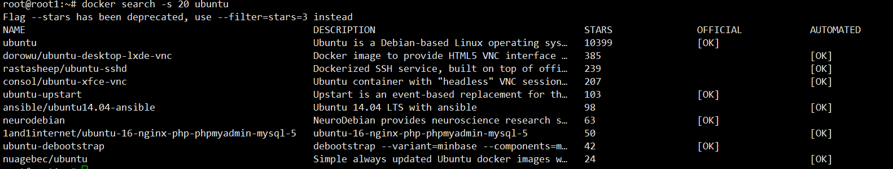

login/logout
login
登陆到一个Docker镜像仓库，如果未指定镜像仓库地址，默认为官方仓库 Docker Hublogout
登出一个Docker镜像仓库，如果未指定镜像仓库地址，默认为官方仓库 Docker Hub
语法
docker login [选项] [SERVER]
docker logout [选项] [SERVER]
选项
- -u
登陆的用户名 - -p
登陆的密码
pull
从镜像仓库中拉取或者更新指定镜像
语法
docker pull [选项] NAME[:TAG|@DIGEST]
选项
- -a
拉取所有 tagged 镜像 - --disable-content-trust
忽略镜像的校验,默认开启
使用示例
从Docker Hub下载java最新版镜像。
$ docker pull java
从Docker Hub下载REPOSITORY为java的所有镜像。
$ docker pull -a java
push
将本地的镜像上传到镜像仓库,要先登陆到镜像仓库
语法
docker push [选项] NAME[:TAG]
选项
- --disable-content-trust
忽略镜像的校验,默认开启
使用示例
上传本地镜像myapache:v1到镜像仓库中。
$ docker push myapache:v1
search
从Docker Hub查找镜像
语法
docker search [选项] TERM
选项
- --automated
只列出 automated build类型的镜像； - --no-trunc
显示完整的镜像描述； - -s
列出收藏数不小于指定值的镜像。
使用示例
从docker hub查找所有镜像包含ubuntu, 并且star数大于20的镜像, 结果如下图
$ docker search -s 20 ubuntu

字段说明
| 字段 | 说明 |
|---|---|
| NAME | 镜像仓库源的名称 |
| DESCRIPTION | 镜像的描述 |
| OFFICIAL | 是否 docker 官方发布 |
| stars | 类似 Github 里面的 star，表示点赞、喜欢的意思 |
| AUTOMATED | 自动构建 |
查看远端所有tag
function usage()
{
cat << HELP
dockertags -- list all tag
}
查看远端镜像所有tag
function usage()
{
echo "
用法:
bash ./dockertags [镜像名]
示例:
bash ./dockertags ubuntu"
}
if [ $# -lt 1 ]; then
usage
exit 0
fi
image="$1"
tags=`wget -q https://registry.hub.docker.com/v1/repositories/${image}/tags -O - | \
sed -e 's/[][]//g' -e 's/"//g' -e 's/ //g' | tr '}' '\n' | \
awk -F: '{print $3}'`
if [ -n "$2" ]; then
tags=` echo "${tags}" | grep "$2"`
fi
echo "${tags}"